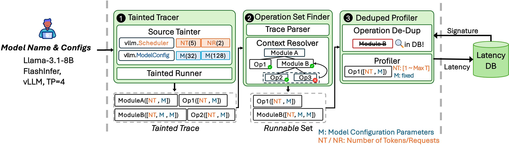

Problem Statement
LLM inference performance depends on many configuration choices, including hardware, serving engine, attention backend, and model architecture, and changing any one of them changes the latency of the underlying GPU operations. Operation-level profiling captures this dependence by measuring the latency of every operation a model invokes under a given configuration, and these profiles are the building blocks for understanding and comparing performance across configurations. Yet existing profilers hardcode their operation set to a specific configuration and re-profile every operation from scratch, treating each (model, engine, backend, hardware) combination as a fresh target and ignoring the substantial overlap across configurations. This makes broad configuration sweeps prohibitively expensive.
Dooly's Approach

Dooly exploits structural redundancy in LLM models to achieve configuration-agnostic, redundancy-aware profiling, profiling each unique operation only once and reusing it across all configurations that share it.
Our core insight is that every input dimension of every operation in an LLM forward pass is either fixed by the model configuration or determined by the incoming request, and that model-configuration values (head size, layer count, etc.) recur heavily across model families.
Dooly exploits this through three key ideas:
- Taint propagation for dimension provenance. Dooly performs a single inference pass and labels each input dimension of each operation with its origin (model config, request size, or derived combination) via taint propagation, exposing which operations are equivalent across configurations.
- Hierarchical context resolution for stateful operations. Operations like attention carry implicit state that breaks naive operation extraction. Dooly isolates these by reusing the serving engine's own initialization code, eliminating the need for manual instrumentation.
- Duplication-aware profiling against a persistent database. Dooly generates kernel-aware signatures for each operation and only profiles operations absent from its latency database, enabling cumulative reuse across runs and configurations.
Application of Dooly
To evaluate the accuracy of Dooly's profiling approach, we introduce DoolySim, a profile-based simulation framework that leverages the latency database populated by Dooly, to predict and analyze the performance of LLM inference under various configurations. Dooly can be applied to any LLM inference scenario to reduce profiling overhead and improve performance prediction accuracy. Examples include:
- Profile-based LLM inference simulators (e.g., DoolySim, Vidur, LLMServingSim)
- Latency-prediction based LLM scheduling (e.g., Google's llm-d)
- Benchmarking for LLM inference kernel optimizations
Demo
Dooly reduces profiling overhead by 56.4% by detecting common operations across different LLM deployment configurations.
DoolySim achieves accurate latency prediction (TTFT: 5% MAPE; TPOT: 8% MAPE) by emulating the target inference engine.
BibTeX
@inproceedings{kim2026dooly,
title={Dooly: Configuration-Agnostic, Redundancy-Aware Profiling for LLM Inference Simulation},
author={Kim, Joon Ha and Kim, Geon-Woo and Rachakonda, Anoop and Kim, Daehyeok},
booktitle={Advances in Neural Information Processing Systems (NeurIPS)},
year={2026},
url={https://arxiv.org/abs/2605.07985}
}